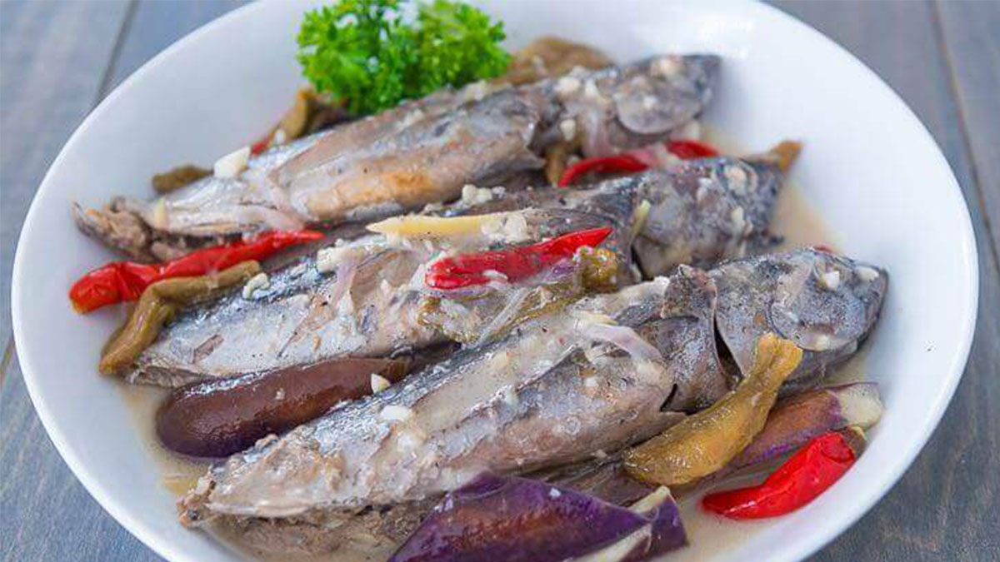

Collection of Fish Recipes
Sarciadong Tilapia

Sarsiado (also sometimes spelled as sarciado) is a delicacy from the Philippines which features a sauce predominantly composed of tomatoes and eggs.
Sinigang na Bangus
Sinigang is a traditional Filipino dish that is known for its sour and savory taste. It's a hearty soup made by cooking meat or seafood in a tamarind-based broth with vegetables like tomatoes, onions, and eggplant. It's a beloved dish that has been enjoyed by Filipinos for generations and is now a staple in Filipino households and restaurants all over the world.
Paksiw na Isda
Paksiw is a Filipino style of cooking, whose name means "to cook and simmer in vinegar". Common dishes bearing the term, however, can vary substantially depending on what is being cooked.
Ginataang Tulingan
The tulingan or mackerel tuna cooked sinaing (boiled) or ginataan (cooked in coconut) style. The tulingan or the mackerel tuna when cooked the ginataan way emits an aromatic flavor that is appetizingly delicious.
Sweet and Sour Fish